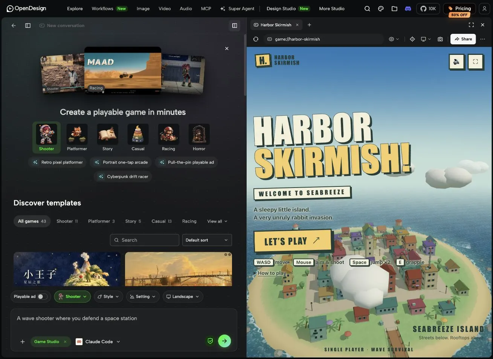

THE OPEN-SOURCE SUPER GAME AGENT
Make games.Make money.
Everyone can build games
that make money.
REMIX / CREATE / LAUNCH
GAME STUDIO · REAL PRODUCT CAPTURE

100+TOP VIRAL
GAMESOpen source. Ready to remix.
GAMESOpen source. Ready to remix.
29SUPPORTED
AGENTSBring your favorite agent.
AGENTSBring your favorite agent.
11+MEDIA
MODELSImages, video, music & voice.
MODELSImages, video, music & voice.
3+PUBLISHING
PLATFORMSTikTok · WeChat · Douyin
PLATFORMSTikTok · WeChat · Douyin